GAT 21–40 media review
435 formula images → LaTeX · 16 image tables → editable tables · 89 drawings → SVG/JSON · 6 originals retained. Every source graphic appears once below. Use the filters to skim one category.
image1 · formula · Assignment 21, I
Original · reference page 1 LaTeX candidate
LaTeX candidateLaTeX source
y-\text{axis}image2 · network · Assignment 21, II
Original · reference page 1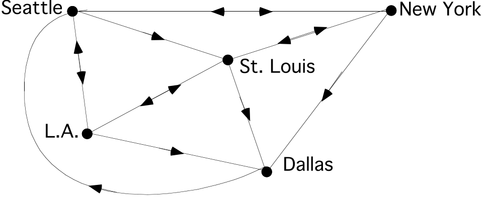
Drawing recovered as vectors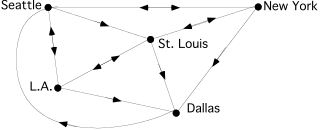
SVG · Drawing JSON · Structured data · Original drawing
image3 · annotated matrix · Assignment 21, II
Original · reference page 1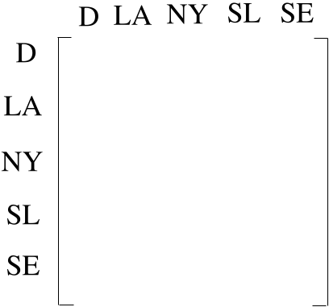
Drawing + readable formulas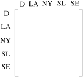
SVG · Drawing JSON · Structured data · Original drawing
image4 · dilation · Assignment 21, III
Original · reference page 2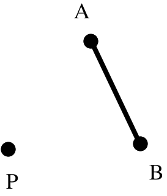
Drawing recovered as vectorsSVG · Drawing JSON · Original drawing
image5 · geometry · Assignment 21, IV
Original · reference page 2Drawing recovered as vectors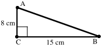
SVG · Drawing JSON · Original drawing
image6 · formula · Assignment 21, V
Original · reference page 3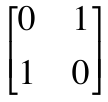
LaTeX candidateLaTeX source
\left[ \begin{matrix}0 & 1 \\ 1 & 0\end{matrix} \right]image7 · formula · Assignment 21, V
Original · reference page 3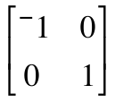
LaTeX candidateLaTeX source
\left[ \begin{matrix}{}^{-}1 & 0 \\ 0 & 1\end{matrix} \right]image8 · annotated matrix · Assignment 21, VI
Original · reference page 3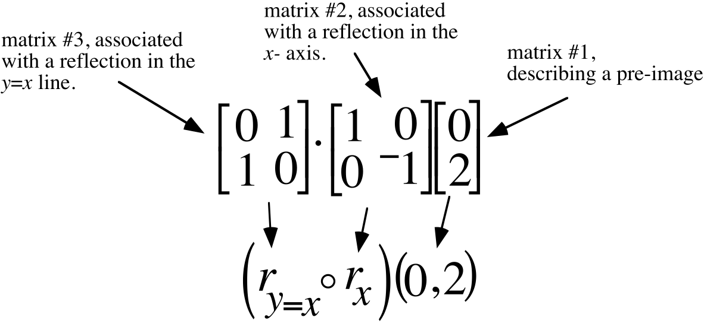
Drawing + readable formulas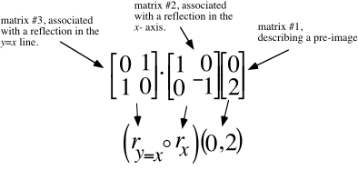
SVG · Drawing JSON · Structured data · Original drawing
image9 · formula · Assignment 21, VI
Original · reference page 3 LaTeX candidate
LaTeX candidateLaTeX source
\left[ \begin{matrix}0 \\ {}^{-}2\end{matrix} \right]image10 · formula · Assignment 21, VI
Original · reference page 3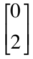
LaTeX candidateLaTeX source
\left[ \begin{matrix}0 \\ 2\end{matrix} \right]image11 · formula · Assignment 21, VI
Original · reference page 3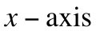
LaTeX candidateLaTeX source
x-\text{axis}image12 · formula · Assignment 21, VI
Original · reference page 3 LaTeX candidate
LaTeX candidateLaTeX source
\left[ \begin{matrix}0 \\ {}^{-}2\end{matrix} \right]image13 · formula · Assignment 21, VI
Original · reference page 3 LaTeX candidate
LaTeX candidateLaTeX source
\left[ \begin{matrix}{}^{-}2 \\ 0\end{matrix} \right]image14 · formula · Assignment 21, VI
Original · reference page 3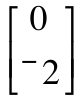
LaTeX candidateLaTeX source
\left[ \begin{matrix}0 \\ {}^{-}2\end{matrix} \right]image15 · formula · Assignment 21, VI
Original · reference page 4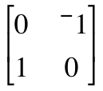
LaTeX candidateLaTeX source
\left[ \begin{matrix}0 & {}^{-}1 \\ 1 & 0\end{matrix} \right]image16 · formula · Assignment 21, VI
Original · reference page 4 LaTeX candidate
LaTeX candidateLaTeX source
\left[ \begin{matrix}0 \\ 2\end{matrix} \right]image17 · formula · Assignment 21, VI
Original · reference page 4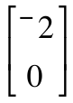
LaTeX candidateLaTeX source
\left[ \begin{matrix}{}^{-}2 \\ 0\end{matrix} \right]image18 · formula · Assignment 21, VI
Original · reference page 4LaTeX candidateLaTeX source
\times image19 · formula · Assignment 21, VI
Original · reference page 4 LaTeX candidate
LaTeX candidateLaTeX source
\left[ \begin{matrix}0 \\ 2\end{matrix} \right]image20 · formula · Assignment 21, VI
Original · reference page 4 LaTeX candidate
LaTeX candidateLaTeX source
r_{y=x}\circ r_{x}image21 · formula · Assignment 21, VI
Original · reference page 4 LaTeX candidate
LaTeX candidateLaTeX source
\times image22 · formula · Assignment 21, VI
Original · reference page 4 LaTeX candidate
LaTeX candidateLaTeX source
\left[ \begin{matrix}0 & {}^{-}1 \\ 1 & 0\end{matrix} \right]image23 · formula · Assignment 21, VI
Original · reference page 4 LaTeX candidate
LaTeX candidateLaTeX source
r_{y=x}\circ r_{x}image24 · formula · Assignment 21, VI
Original · reference page 4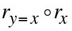
LaTeX candidateLaTeX source
r_{y=x}\circ r_{x}image25 · annotated matrix · Assignment 21, VI
Original · reference page 4Drawing + readable formulas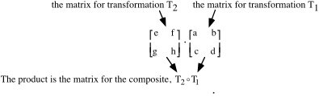
SVG · Drawing JSON · Structured data · Original drawing
image26 · formula · Assignment 21, VI
Original · reference page 4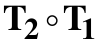
LaTeX candidateLaTeX source
\text{T}_{\text{2}}\circ \text{T}_{\text{1}}image27 · formula · Assignment 21, VI
Original · reference page 5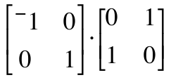
LaTeX candidateLaTeX source
\left[ \begin{matrix}{}^{-}1 & 0 \\ 0 & 1\end{matrix} \right]\cdot \left[ \begin{matrix}0 & 1 \\ 1 & 0\end{matrix} \right]image28 · formula · Assignment 21, VI
Original · reference page 5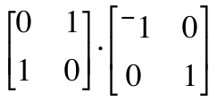
LaTeX candidateLaTeX source
\left[ \begin{matrix}0 & 1 \\ 1 & 0\end{matrix} \right]\cdot \left[ \begin{matrix}{}^{-}1 & 0 \\ 0 & 1\end{matrix} \right]image29 · formula · Assignment 21, VII
Original · reference page 5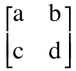
LaTeX candidateLaTeX source
\left[ \begin{matrix}\text{a} & \text{b} \\ \text{c} & \text{d}\end{matrix} \right]image30 · formula · Assignment 21, VII
Original · reference page 5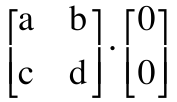
LaTeX candidateLaTeX source
\left[ \begin{matrix}\text{a} & \text{b} \\ \text{c} & \text{d}\end{matrix} \right]\cdot \left[ \begin{matrix}\text{0} \\ \text{0}\end{matrix} \right]image31 · formula · Assignment 21, VII
Original · reference page 5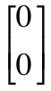
LaTeX candidateLaTeX source
\left[ \begin{matrix}0 \\ 0\end{matrix} \right]image32 · formula · Assignment 21, VII
Original · reference page 5 LaTeX candidate
LaTeX candidateLaTeX source
\times image33 · formula · Assignment 21, VIII
Original · reference page 5 LaTeX candidate
LaTeX candidateLaTeX source
\times image34 · dilation · Assignment 22, I
Original · reference page 6Drawing recovered as vectors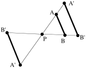
SVG · Drawing JSON · Original drawing
image35 · dilation · Assignment 22, I
Original · reference page 7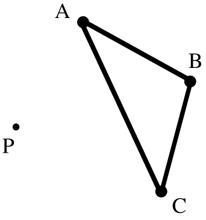
Drawing recovered as vectorsSVG · Drawing JSON · Original drawing
image36 · geometry · Assignment 22, II
Original · reference page 7Drawing recovered as vectors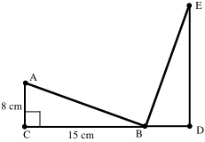
SVG · Drawing JSON · Original drawing
image37 · formula · Assignment 22, III
Original · reference page 8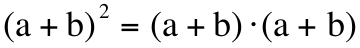
LaTeX candidateLaTeX source
\text{(a}+\text{b)}^{\text{2}}=\text{(a}+\text{b)}\cdot \text{(a}+\text{b)}image38 · formula · Assignment 22, III
Original · reference page 8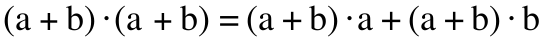
LaTeX candidateLaTeX source
\text{(a}+\text{b)}\cdot \text{(a}+\text{b)=(a+b)}\cdot \text{a+(a+b)}\cdot \text{b}image39 · formula · Assignment 22, III
Original · reference page 8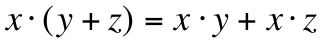
LaTeX candidateLaTeX source
x\cdot \mathrm{(}y+z\mathrm{)}=x\cdot y+x\cdot zimage40 · formula · Assignment 22, III
Original · reference page 8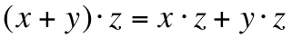
LaTeX candidateLaTeX source
\mathrm{(}x+y\mathrm{)}\cdot z=x\cdot z+y\cdot zimage41 · formula · Assignment 22, III
Original · reference page 8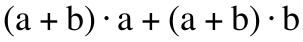
LaTeX candidateLaTeX source
\text{(a}+\text{b)}\cdot \text{a}+\text{(a}+\text{b)}\cdot \text{b}image42 · formula · Assignment 22, IV
Original · reference page 8 LaTeX candidate
LaTeX candidateLaTeX source
\times image43 · formula · Assignment 22, V
Original · reference page 8 LaTeX candidate
LaTeX candidateLaTeX source
y-\text{axis}image44 · formula · Assignment 22, V
Original · reference page 8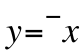
LaTeX candidateLaTeX source
y={}^{-}ximage45 · formula · Assignment 22, VI
Original · reference page 9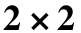
LaTeX candidateLaTeX source
2\times 2image46 · formula · Assignment 22, VI
Original · reference page 9 LaTeX candidate
LaTeX candidateLaTeX source
\times image47 · formula · Assignment 22, VI
Original · reference page 9 LaTeX candidate
LaTeX candidateLaTeX source
\times image48 · formula · Assignment 22, VI
Original · reference page 9 LaTeX candidate
LaTeX candidateLaTeX source
\times image49 · coordinate plot · Assignment 22, VII
Original · reference page 9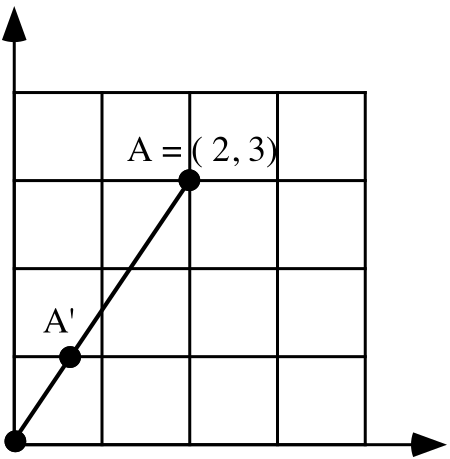
Drawing recovered as vectors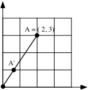
SVG · Drawing JSON · Original drawing
image50 · formula · Assignment 22, VIII
Original · reference page 9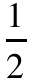
LaTeX candidateLaTeX source
\frac{1}{2}image51 · formula · Assignment 22, VIII
Original · reference page 9 LaTeX candidate
LaTeX candidateLaTeX source
\frac{{}^{-}1}{2}image52 · formula · Assignment 22, VIII
Original · reference page 9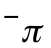
LaTeX candidateLaTeX source
{}^{-}\pi image53 · dilation · Assignment 23, I
Original · reference page 10Drawing recovered as vectors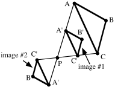
SVG · Drawing JSON · Original drawing
image54 · formula · Assignment 23, I
Original · reference page 10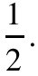
LaTeX candidateLaTeX source
\frac{1}{2}\mathrm{.}image55 · formula · Assignment 23, I
Original · reference page 10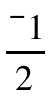
LaTeX candidateLaTeX source
\frac{{}^{-}1}{2}image56 · dilation · Assignment 23, I
Original · reference page 10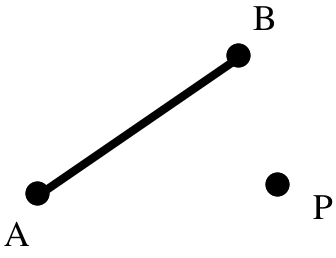
Drawing recovered as vectorsSVG · Drawing JSON · Original drawing
image57 · formula · Assignment 23, II
Original · reference page 11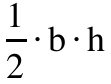
LaTeX candidateLaTeX source
\frac{1}{2}\cdot \text{b}\cdot \text{h}image58 · geometry · Assignment 23, II
Original · reference page 11Drawing recovered as vectors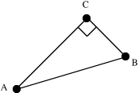
SVG · Drawing JSON · Original drawing
image59 · geometry · Assignment 23, II
Original · reference page 12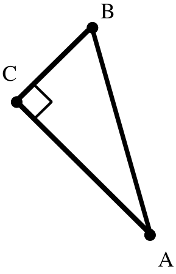
Drawing recovered as vectorsSVG · Drawing JSON · Original drawing
image60 · coordinate plot · Assignment 23, III
Original · reference page 12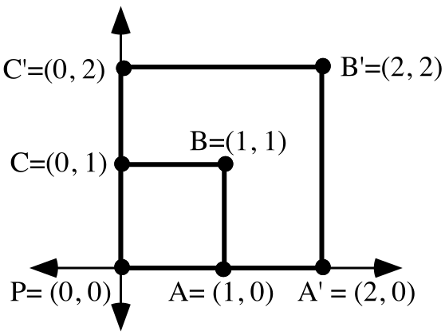
Drawing recovered as vectors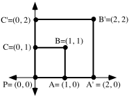
SVG · Drawing JSON · Original drawing
image61 · formula · Assignment 23, VI
Original · reference page 13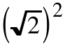
LaTeX candidateLaTeX source
\left( \sqrt{2} \right)^{2}image62 · formula · Assignment 23, VI
Original · reference page 13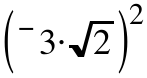
LaTeX candidateLaTeX source
\left( {}^{-}3\cdot \sqrt{2} \right)^{2}image63 · formula · Assignment 23, VII
Original · reference page 14 LaTeX candidate
LaTeX candidateLaTeX source
r_{y=x}\circ r_{x}image64 · formula · Assignment 23, VII
Original · reference page 14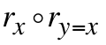
LaTeX candidateLaTeX source
r_{x}\circ r_{y=x}image65 · formula · Assignment 23, VII
Original · reference page 14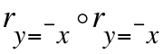
LaTeX candidateLaTeX source
r_{y={}^{-}x}\circ r_{y={}^{-}x}image66 · geometry · Assignment 23, VIII
Original · reference page 14Drawing recovered as vectorsSVG · Drawing JSON · Original drawing
image67 · formula · Assignment 23, VIII
Original · reference page 14 LaTeX candidate
LaTeX candidateLaTeX source
\text{(a}+\text{b)}^{\text{2}}=\text{(a}+\text{b)}\cdot \text{(a}+\text{b)}image68 · formula · Assignment 23, IX
Original · reference page 15LaTeX candidateLaTeX source
\frac{{}^{-}7}{8}image69 · formula · Assignment 23, IX
Original · reference page 15LaTeX candidateLaTeX source
{}^{-}\mathrm{(}{}^{-}2\mathrm{)}image70 · geometry · Assignment 24, I
Original · reference page 16Drawing recovered as vectorsSVG · Drawing JSON · Original drawing
image71 · formula · Assignment 24, II
Original · reference page 17LaTeX candidateLaTeX source
\left[ \begin{matrix}\text{k} & \text{0} \\ \text{0} & \text{k}\end{matrix} \right]image72 · formula · Assignment 24, II
Original · reference page 17LaTeX candidateLaTeX source
\left[ \begin{matrix}\text{k} & \text{0} \\ \text{0} & \text{k}\end{matrix} \right]\left[ \begin{matrix}x \\ y\end{matrix} \right]=\left[ \begin{matrix}\text{k}\cdot x \\ \text{k}\cdot y\end{matrix} \right]image73 · formula · Assignment 24, II
Original · reference page 17LaTeX candidateLaTeX source
\text{S}_{\frac{1}{2}}image74 · formula · Assignment 24, II
Original · reference page 17LaTeX candidateLaTeX source
_{{}^{-}2}image75 · coordinate plot · Assignment 24, III
Original · reference page 18Drawing recovered as vectorsSVG · Drawing JSON · Original drawing
image76 · formula · Assignment 24, III
Original · reference page 18 LaTeX candidate
LaTeX candidateLaTeX source
\text{S}_{\frac{1}{2}}image77 · formula · Assignment 24, IV
Original · reference page 18LaTeX candidateLaTeX source
\left[ \begin{matrix}3 & 2 \\ {}^{-}5 & {}^{-}4\end{matrix} \right]image78 · formula · Assignment 24, V
Original · reference page 19LaTeX candidateLaTeX source
\text{R}_{90}\circ r_{x}image79 · formula · Assignment 24, V
Original · reference page 19LaTeX candidateLaTeX source
r_{x}\circ \text{R}_{90}image80 · formula · Assignment 24, V
Original · reference page 19LaTeX candidateLaTeX source
r_{y=x}\circ r_{y=x}image81 · geometry · Assignment 24, VI
Original · reference page 19Drawing recovered as vectorsSVG · Drawing JSON · Original drawing
image82 · formula · Assignment 24, VII
Original · reference page 19LaTeX candidateLaTeX source
x=1image83 · formula · Assignment 24, VII
Original · reference page 19 LaTeX candidate
LaTeX candidateLaTeX source
x=1image84 · formula · Assignment 24, VII
Original · reference page 20LaTeX candidateLaTeX source
\left[ \begin{matrix}1 & 2 \\ 0 & 1\end{matrix} \right]image85 · formula · Assignment 24, VII
Original · reference page 20 LaTeX candidate
LaTeX candidateLaTeX source
x=1image86 · formula · Assignment 24, VII
Original · reference page 20 LaTeX candidate
LaTeX candidateLaTeX source
\left[ \begin{matrix}0 \\ 0\end{matrix} \right]image87 · formula · Assignment 24, VIII
Original · reference page 20LaTeX candidateLaTeX source
\frac{9}{4}image88 · formula · Assignment 24, IX
Original · reference page 20LaTeX candidateLaTeX source
\sqrt{\left( \sqrt{2} \right)^{2}+\left( \sqrt{2} \right)^{2}}image89 · formula · Assignment 24, IX
Original · reference page 20LaTeX candidateLaTeX source
\sqrt{\left( {}^{-}3\cdot \sqrt{2} \right)^{2}+\left( {}^{-}3\cdot \sqrt{2} \right)^{2}}image90 · shapes symmetry · Assignment 25, I
Original · reference page 21Drawing recovered as vectorsSVG · Drawing JSON · Original drawing
image91 · coordinate plot · Assignment 25, II
Original · reference page 21Drawing recovered as vectorsSVG · Drawing JSON · Original drawing
image92 · dilation · Assignment 25, III
Original · reference page 22Drawing recovered as vectorsSVG · Drawing JSON · Original drawing
image93 · formula · Assignment 25, IV
Original · reference page 22LaTeX candidateLaTeX source
\text{S}_{\text{2}}\circ \text{S}_{3}image94 · formula · Assignment 25, IV
Original · reference page 22LaTeX candidateLaTeX source
\text{S}_{\frac{\text{4}}{\text{3}}}\circ \text{S}_{\frac{3}{4}}image95 · geometry · Assignment 25, V
Original · reference page 22Drawing recovered as vectorsSVG · Drawing JSON · Original drawing
image96 · formula · Assignment 25, V
Original · reference page 22 LaTeX candidate
LaTeX candidateLaTeX source
\ell image97 · formula · Assignment 25, VI
Original · reference page 22LaTeX candidateLaTeX source
\frac{3}{5}image98 · formula · Assignment 25, VI
Original · reference page 22LaTeX candidateLaTeX source
\left( \frac{1}{3}\mathrm{,}{}^{-}2 \right)image99 · formula · Assignment 25, VI
Original · reference page 23LaTeX candidateLaTeX source
\left( {}^{-}\pi \mathrm{,}3 \right)image100 · formula · Assignment 25, VI
Original · reference page 23LaTeX candidateLaTeX source
\frac{{}^{-}3}{\pi }image101 · coordinate plot · Assignment 25, VII
Original · reference page 23Drawing recovered as vectorsThe printed A-prime and B-prime coordinate labels appear swapped relative to their drawn positions. Source labels are preserved.
SVG · Drawing JSON · Original drawing
image102 · formula · Assignment 25, VII
Original · reference page 23LaTeX candidateLaTeX source
\text{S}_{{}^{-}3}\mathrm{(}x\mathrm{,}y\mathrm{)}=\mathrm{(}{}^{-}3\cdot x\mathrm{,}{}^{-}3\cdot y\mathrm{)}image103 · shapes symmetry · Assignment 26, I
Original · reference page 25Drawing recovered as vectorsSVG · Drawing JSON · Original drawing
image104 · coordinate plot · Assignment 26, I
Original · reference page 25Drawing recovered as vectorsSVG · Drawing JSON · Original drawing
image105 · coordinate plot · Assignment 26, II
Original · reference page 26Drawing recovered as vectorsSVG · Drawing JSON · Original drawing
image106 · formula · Assignment 26, II
Original · reference page 26LaTeX candidateLaTeX source
1\mathrm{.}3\cdot \sqrt{200}image107 · geometry · Assignment 26, III
Original · reference page 27Drawing recovered as vectorsSVG · Drawing JSON · Original drawing
image108 · geometry · Assignment 26, IV
Original · reference page 27Drawing recovered as vectorsSVG · Drawing JSON · Original drawing
image109 · formula · Assignment 26, V
Original · reference page 27LaTeX candidateLaTeX source
\left[ \begin{matrix}\frac{{}^{-}2}{7} & 0 \\ 0 & \frac{{}^{-}2}{7}\end{matrix} \right]\cdot \left[ \begin{matrix}\frac{{}^{-}3}{2} & 0 \\ 0 & \frac{{}^{-}3}{2}\end{matrix} \right]image110 · formula · Assignment 26, V
Original · reference page 27LaTeX candidateLaTeX source
\text{S}_{\text{d}}\circ \text{S}_{\text{c}}image111 · geometry · Assignment 26, VI
Original · reference page 28Drawing recovered as vectorsSVG · Drawing JSON · Original drawing
image112 · formula · Assignment 26, VI
Original · reference page 28 LaTeX candidate
LaTeX candidateLaTeX source
\ell image113 · formula · Assignment 26, VI
Original · reference page 28 LaTeX candidate
LaTeX candidateLaTeX source
y-\text{axis}image114 · formula · Assignment 26, VI
Original · reference page 28LaTeX candidateLaTeX source
x-\text{axis}\mathrm{.}image115 · coordinate plot · Assignment 26, VI
Original · reference page 29Drawing recovered as vectorsSVG · Drawing JSON · Original drawing
image116 · formula · Assignment 26, VI
Original · reference page 29LaTeX candidateLaTeX source
\ell _{1}image117 · formula · Assignment 26, VI
Original · reference page 29 LaTeX candidate
LaTeX candidateLaTeX source
\ell _{3}image118 · formula · Assignment 26, VI
Original · reference page 29LaTeX candidateLaTeX source
\left( {}^{-}1\mathrm{,}\frac{{}^{-}\sqrt{2}}{2} \right)image119 · formula · Assignment 26, VI
Original · reference page 29 LaTeX candidate
LaTeX candidateLaTeX source
\ell _{2}image120 · formula · Assignment 26, VI
Original · reference page 29 LaTeX candidate
LaTeX candidateLaTeX source
x-\text{axis}\mathrm{.}image121 · formula · Assignment 26, VIII
Original · reference page 29LaTeX candidateLaTeX source
x+2\cdot y=10image122 · calculation flow · Assignment 26, VIII
Original · reference page 30Drawing + readable formulasSVG · Drawing JSON · Structured data · Original drawing
image123 · calculation flow · Assignment 26, VIII
Original · reference page 30Drawing + readable formulasThe source intentionally shows the false statement 3 + 2·4 = 10 while teaching non-solutions. It is preserved exactly.
SVG · Drawing JSON · Structured data · Original drawing
image124 · calculation flow · Assignment 26, VIII
Original · reference page 30 Drawing + readable formulasSVG · Drawing JSON · Structured data · Original drawing
Drawing + readable formulasSVG · Drawing JSON · Structured data · Original drawing
image125 · calculation flow · Assignment 26, VIII
Original · reference page 30Drawing + readable formulasSVG · Drawing JSON · Structured data · Original drawing
image126 · calculation flow · Assignment 26, VIII
Original · reference page 30Drawing + readable formulasSVG · Drawing JSON · Structured data · Original drawing
image127 · calculation flow · Assignment 26, VIII
Original · reference page 31Drawing + readable formulasSVG · Drawing JSON · Structured data · Original drawing
image128 · calculation flow · Assignment 26, VIII
Original · reference page 31Drawing + readable formulasSVG · Drawing JSON · Structured data · Original drawing
image129 · coordinate plot · Assignment 27, I
Original · reference page 32Drawing recovered as vectorsThe negative sign in the A-prime coordinate is faint/raised; compare with image104 and the source.
SVG · Drawing JSON · Original drawing
image130 · formula · Assignment 27, I
Original · reference page 32 LaTeX candidate
LaTeX candidateLaTeX source
\times image131 · formula · Assignment 27, I
Original · reference page 32 LaTeX candidate
LaTeX candidateLaTeX source
\times image132 · coordinate plot · Assignment 27, I
Original · reference page 33Drawing recovered as vectorsSVG · Drawing JSON · Original drawing
image133 · geometry · Assignment 27, II
Original · reference page 33Original retainedOriginal retainedThe water-fill texture contains two raster fragments; retain the original artwork.The water-fill texture contains two raster fragments; retain the original artwork.
Original drawingimage134 · formula · Assignment 27, III
Original · reference page 34LaTeX candidateLaTeX source
\text{S}_{\text{k}}\circ \text{S}_{\frac{{}^{-}2}{3}}image135 · formula · Assignment 27, III
Original · reference page 34LaTeX candidateLaTeX source
\left[ \begin{matrix}1 & 0 \\ 0 & 1\end{matrix} \right]image136 · formula · Assignment 27, III
Original · reference page 34LaTeX candidateLaTeX source
\text{S}_{\text{2}}\circ \text{S}_{\text{k}}image137 · formula · Assignment 27, III
Original · reference page 34LaTeX candidateLaTeX source
\left[ \begin{matrix}5 & 0 \\ 0 & 5\end{matrix} \right]image138 · formula · Assignment 27, VI
Original · reference page 34 LaTeX candidate
LaTeX candidateLaTeX source
\ell image139 · formula · Assignment 27, VI
Original · reference page 34 LaTeX candidate
LaTeX candidateLaTeX source
\ell image140 · formula · Assignment 27, VI
Original · reference page 34 LaTeX candidate
LaTeX candidateLaTeX source
\ell image141 · coordinate plot · Assignment 27, VI
Original · reference page 35Drawing recovered as vectorsSVG · Drawing JSON · Original drawing
image142 · formula · Assignment 27, VI
Original · reference page 35 LaTeX candidate
LaTeX candidateLaTeX source
\ell image143 · formula · Assignment 27, VI
Original · reference page 35LaTeX candidateLaTeX source
\left( \frac{{}^{-}8}{7}\mathrm{,}\frac{1}{3} \right)image144 · formula · Assignment 27, VI
Original · reference page 35LaTeX candidateLaTeX source
\frac{{}^{-}8}{7}image145 · formula · Assignment 27, VI
Original · reference page 35LaTeX candidateLaTeX source
\frac{{}^{-}7}{8}image146 · formula · Assignment 27, VI
Original · reference page 35LaTeX candidateLaTeX source
\frac{{}^{-}7}{8}\cdot \frac{1}{3}=\frac{{}^{-}7}{24}image147 · formula · Assignment 27, VI
Original · reference page 35LaTeX candidateLaTeX source
\frac{{}^{-}7}{24}image148 · formula · Assignment 27, VI
Original · reference page 35 LaTeX candidate
LaTeX candidateLaTeX source
\ell image149 · coordinate plot · Assignment 27, VI
Original · reference page 35Drawing recovered as vectorsSVG · Drawing JSON · Original drawing
image150 · formula · Assignment 27, VI
Original · reference page 35 LaTeX candidate
LaTeX candidateLaTeX source
\ell _{1}image151 · formula · Assignment 27, VI
Original · reference page 35 LaTeX candidate
LaTeX candidateLaTeX source
\ell _{2}image152 · formula · Assignment 27, VI
Original · reference page 35 LaTeX candidate
LaTeX candidateLaTeX source
\ell _{3}image153 · formula · Assignment 27, VI
Original · reference page 36 LaTeX candidate
LaTeX candidateLaTeX source
\ell _{1}image154 · formula · Assignment 27, VI
Original · reference page 36 LaTeX candidate
LaTeX candidateLaTeX source
\ell _{2}image155 · formula · Assignment 27, VI
Original · reference page 36 LaTeX candidate
LaTeX candidateLaTeX source
\ell _{3}image156 · formula · Assignment 27, VI
Original · reference page 36LaTeX candidateLaTeX source
y-\text{axis}image157 · coordinate plot · Assignment 27, VII
Original · reference page 36Drawing recovered as vectorsSVG · Drawing JSON · Original drawing
image158 · formula · Assignment 27, VII
Original · reference page 36LaTeX candidateLaTeX source
kimage159 · formula · Assignment 27, VII
Original · reference page 36 LaTeX candidate
LaTeX candidateLaTeX source
\ell image160 · formula · Assignment 27, VII
Original · reference page 36 LaTeX candidate
LaTeX candidateLaTeX source
mimage161 · formula · Assignment 27, VII
Original · reference page 36 LaTeX candidate
LaTeX candidateLaTeX source
mimage162 · formula · Assignment 27, VII
Original · reference page 36 LaTeX candidate
LaTeX candidateLaTeX source
\ell image163 · formula · Assignment 27, VII
Original · reference page 36 LaTeX candidate
LaTeX candidateLaTeX source
kimage164 · coordinate plot · Assignment 27, VIII
Original · reference page 36Drawing recovered as vectorsSVG · Drawing JSON · Original drawing
image165 · formula · Assignment 27, VIII
Original · reference page 36 LaTeX candidate
LaTeX candidateLaTeX source
\ell image166 · formula · Assignment 27, VIII
Original · reference page 36 LaTeX candidate
LaTeX candidateLaTeX source
\ell image167 · formula · Assignment 27, VIII
Original · reference page 36 LaTeX candidate
LaTeX candidateLaTeX source
\ell image168 · calculation flow · Assignment 27, IX
Original · reference page 37Drawing + readable formulasSVG · Drawing JSON · Structured data · Original drawing
image169 · calculation flow · Assignment 27, IX
Original · reference page 37Drawing + readable formulasSVG · Drawing JSON · Structured data · Original drawing
image170 · geometry · Assignment 27, X
Original · reference page 37Drawing recovered as vectorsSVG · Drawing JSON · Original drawing
image171 · geometry · Assignment 28, I
Original · reference page 38Drawing recovered as vectorsSVG · Drawing JSON · Original drawing
image172 · formula · Assignment 28, II
Original · reference page 38 LaTeX candidate
LaTeX candidateLaTeX source
\left[ \begin{matrix}1 & 0 \\ 0 & 1\end{matrix} \right]image173 · formula · Assignment 28, II
Original · reference page 38LaTeX candidateLaTeX source
\text{S}_{\frac{{}^{-}\text{3}}{\text{4}}}\circ \text{S}_{\text{k}}image174 · formula · Assignment 28, II
Original · reference page 38LaTeX candidateLaTeX source
\text{S}_{{}^{-}\text{3}}\circ \text{S}_{\text{k}}=\text{S}_{\text{7}}image175 · geometry · Assignment 28, III
Original · reference page 38Original retainedOriginal retainedThe flag/person illustration contains two raster fragments; retain the original artwork.The flag/person illustration contains two raster fragments; retain the original artwork.
Original drawingimage176 · coordinate plot · Assignment 28, IV
Original · reference page 39Drawing recovered as vectorsSVG · Drawing JSON · Original drawing
image177 · formula · Assignment 28, IV
Original · reference page 39 LaTeX candidate
LaTeX candidateLaTeX source
\ell _{1}image178 · formula · Assignment 28, IV
Original · reference page 39LaTeX candidateLaTeX source
\sqrt{3}image179 · formula · Assignment 28, IV
Original · reference page 39LaTeX candidateLaTeX source
\ell _{2}image180 · formula · Assignment 28, IV
Original · reference page 39LaTeX candidateLaTeX source
\ell _{3}image181 · formula · Assignment 28, V
Original · reference page 39 LaTeX candidate
LaTeX candidateLaTeX source
\ell image182 · formula · Assignment 28, V
Original · reference page 39 LaTeX candidate
LaTeX candidateLaTeX source
\ell image183 · formula · Assignment 28, V
Original · reference page 39 LaTeX candidate
LaTeX candidateLaTeX source
\ell image184 · formula · Assignment 28, V
Original · reference page 39 LaTeX candidate
LaTeX candidateLaTeX source
mimage185 · formula · Assignment 28, V
Original · reference page 39 LaTeX candidate
LaTeX candidateLaTeX source
\ell image186 · formula · Assignment 28, V
Original · reference page 39 LaTeX candidate
LaTeX candidateLaTeX source
\ell image187 · formula · Assignment 28, V
Original · reference page 39 LaTeX candidate
LaTeX candidateLaTeX source
\ell image188 · formula · Assignment 28, V
Original · reference page 39 LaTeX candidate
LaTeX candidateLaTeX source
mimage189 · coordinate plot · Assignment 28, V
Original · reference page 40Drawing recovered as vectorsSVG · Drawing JSON · Original drawing
image190 · formula · Assignment 28, V
Original · reference page 40 LaTeX candidate
LaTeX candidateLaTeX source
mimage191 · formula · Assignment 28, V
Original · reference page 40 LaTeX candidate
LaTeX candidateLaTeX source
\ell image192 · formula · Assignment 28, V
Original · reference page 40 LaTeX candidate
LaTeX candidateLaTeX source
\ell image193 · calculation flow · Assignment 28, V
Original · reference page 40Drawing + readable formulasSVG · Drawing JSON · Structured data · Original drawing
image194 · formula · Assignment 28, V
Original · reference page 40 LaTeX candidate
LaTeX candidateLaTeX source
\ell image195 · calculation flow · Assignment 28, V
Original · reference page 40Drawing + readable formulasSVG · Drawing JSON · Structured data · Original drawing
image196 · coordinate plot · Assignment 28, V
Original · reference page 41Drawing recovered as vectorsSVG · Drawing JSON · Original drawing
image197 · formula · Assignment 28, V
Original · reference page 41 LaTeX candidate
LaTeX candidateLaTeX source
\ell image198 · formula · Assignment 28, V
Original · reference page 41 LaTeX candidate
LaTeX candidateLaTeX source
\ell image199 · calculation flow · Assignment 28, VII
Original · reference page 41Drawing + readable formulasThe source right-hand side is a raised negative 10; it is preserved.
SVG · Drawing JSON · Structured data · Original drawing
image200 · table · Assignment 28, VIII
Original · reference page 41Image → editable tableThe diameter of a circleThe circumference of the same circle134.510SVG · Drawing JSON · Structured data · Original drawing
image201 · formula · Assignment 28, VIII
Original · reference page 41LaTeX candidateLaTeX source
\mathrm{(}1\mathrm{,}\pi \mathrm{)}image202 · formula · Assignment 28, IX
Original · reference page 42LaTeX candidateLaTeX source
y=2\mathrm{.}3\cdot ximage203 · formula · Assignment 28, IX
Original · reference page 42LaTeX candidateLaTeX source
y=2\mathrm{.}3\cdot \mathrm{(}x+3\mathrm{)}image204 · table · Assignment 29, I
Original · reference page 43Image → editable tableYearWinning time194824.4195223.7195623.4196024.0196423.0196822.5197222.4197622.37198022.03198421.81198821.34199221.81SVG · Drawing JSON · Structured data · Original drawing
image205 · table · Assignment 29, II
Original · reference page 43Image → editable tableSize transformation magnitudeImage of 247SVG · Drawing JSON · Structured data · Original drawing
image206 · calculation flow · Assignment 29, IV
Original · reference page 44Drawing + readable formulasSVG · Drawing JSON · Structured data · Original drawing
image207 · calculation flow · Assignment 29, VI
Original · reference page 44Drawing + readable formulasSVG · Drawing JSON · Structured data · Original drawing
image208 · formula · Assignment 29, VI
Original · reference page 44LaTeX candidateLaTeX source
\mathrm{(}5+{}^{-}3\mathrm{,}{}^{-}7\mathrm{)}image209 · calculation flow · Assignment 29, VI
Original · reference page 44Drawing + readable formulasSVG · Drawing JSON · Structured data · Original drawing
image210 · formula · Assignment 29, VI
Original · reference page 45 LaTeX candidate
LaTeX candidateLaTeX source
\mathrm{(}5+{}^{-}3\mathrm{,}{}^{-}7\mathrm{)}image211 · formula · Assignment 29, VI
Original · reference page 45LaTeX candidateLaTeX source
y={}^{-}1\mathrm{.}4\cdot \mathrm{(}x+3\mathrm{)}image212 · formula · Assignment 29, VI
Original · reference page 45LaTeX candidateLaTeX source
y={}^{-}1\mathrm{.}4\cdot ximage213 · formula · Assignment 29, VI
Original · reference page 45 LaTeX candidate
LaTeX candidateLaTeX source
\mathrm{(}5\mathrm{,}{}^{-}7\mathrm{)}image214 · calculation flow · Assignment 29, VI
Original · reference page 45Drawing + readable formulasSVG · Drawing JSON · Structured data · Original drawing
image215 · formula · Assignment 29, VI
Original · reference page 45LaTeX candidateLaTeX source
\mathrm{(}5\mathrm{,}{}^{-}7\mathrm{)}image216 · calculation flow · Assignment 29, VI
Original · reference page 45Drawing + readable formulasSVG · Drawing JSON · Structured data · Original drawing
image217 · formula · Assignment 29, VII
Original · reference page 45 LaTeX candidate
LaTeX candidateLaTeX source
\ell image218 · formula · Assignment 29, VII
Original · reference page 45 LaTeX candidate
LaTeX candidateLaTeX source
mimage219 · formula · Assignment 29, VII
Original · reference page 45 LaTeX candidate
LaTeX candidateLaTeX source
\ell image220 · formula · Assignment 29, VII
Original · reference page 45 LaTeX candidate
LaTeX candidateLaTeX source
mimage221 · geometry · Assignment 29, VII
Original · reference page 45Drawing recovered as vectorsSVG · Drawing JSON · Original drawing
image222 · formula · Assignment 29, VIII
Original · reference page 45LaTeX candidateLaTeX source
\times image223 · formula · Assignment 30, I
Original · reference page 47 LaTeX candidate
LaTeX candidateLaTeX source
\sqrt{0\mathrm{.}9}image224 · table · Assignment 30, I
Original · reference page 47Image → editable tableSize transformation magnitudeImage of 247SVG · Drawing JSON · Structured data · Original drawing
image225 · formula · Assignment 30, I
Original · reference page 47LaTeX candidateLaTeX source
\mathrm{(}1\mathrm{,}\sqrt{0\mathrm{.}9}\mathrm{)}image226 · formula · Assignment 30, I
Original · reference page 48LaTeX candidateLaTeX source
\sqrt{0\mathrm{.}9}image227 · formula · Assignment 30, I
Original · reference page 48 LaTeX candidate
LaTeX candidateLaTeX source
\mathrm{(}1\mathrm{,}\sqrt{0\mathrm{.}9}\mathrm{)}image228 · formula · Assignment 30, I
Original · reference page 48 LaTeX candidate
LaTeX candidateLaTeX source
\mathrm{(}1\mathrm{,}\sqrt{0\mathrm{.}9}\mathrm{)}image229 · formula · Assignment 30, I
Original · reference page 48 LaTeX candidate
LaTeX candidateLaTeX source
\mathrm{(}1\mathrm{,}\sqrt{0\mathrm{.}9}\mathrm{)}image230 · formula · Assignment 30, I
Original · reference page 48LaTeX candidateLaTeX source
\sqrt{0\mathrm{.}9}image231 · table · Assignment 30, III
Original · reference page 49Image → editable tableThe measure of a length in metersThe measure of the same length in inches1278.743118.115196.85393.70SVG · Drawing JSON · Structured data · Original drawing
image232 · formula · Assignment 30, VI
Original · reference page 50 LaTeX candidate
LaTeX candidateLaTeX source
mimage233 · formula · Assignment 30, VI
Original · reference page 50 LaTeX candidate
LaTeX candidateLaTeX source
\ell image234 · formula · Assignment 30, VI
Original · reference page 50 LaTeX candidate
LaTeX candidateLaTeX source
mimage235 · formula · Assignment 30, VI
Original · reference page 50 LaTeX candidate
LaTeX candidateLaTeX source
\ell image236 · formula · Assignment 30, VI
Original · reference page 50 LaTeX candidate
LaTeX candidateLaTeX source
mimage237 · formula · Assignment 30, VI
Original · reference page 50 LaTeX candidate
LaTeX candidateLaTeX source
\text{T}_{1}\mathrm{(}x\mathrm{,}y\mathrm{)}=image238 · formula · Assignment 30, VI
Original · reference page 50 LaTeX candidate
LaTeX candidateLaTeX source
\text{T}_{2}\mathrm{(}x\mathrm{,}y\mathrm{)}=image239 · formula · Assignment 30, VII
Original · reference page 50 LaTeX candidate
LaTeX candidateLaTeX source
\ell image240 · formula · Assignment 30, VII
Original · reference page 50 LaTeX candidate
LaTeX candidateLaTeX source
\text{R}_{90}image241 · formula · Assignment 30, VII
Original · reference page 50 LaTeX candidate
LaTeX candidateLaTeX source
\text{R}_{90}image242 · formula · Assignment 30, VII
Original · reference page 50 LaTeX candidate
LaTeX candidateLaTeX source
\ell image243 · geometry · Assignment 30, VIII
Original · reference page 50Drawing recovered as vectorsSVG · Drawing JSON · Original drawing
image244 · coordinate plot · Assignment 31, I
Original · reference page 51Drawing recovered as vectorsSVG · Drawing JSON · Original drawing
image245 · formula · Assignment 31, I
Original · reference page 51 LaTeX candidate
LaTeX candidateLaTeX source
\ell image246 · formula · Assignment 31, I
Original · reference page 51 LaTeX candidate
LaTeX candidateLaTeX source
\ell image247 · formula · Assignment 31, I
Original · reference page 51 LaTeX candidate
LaTeX candidateLaTeX source
\ell image248 · formula · Assignment 31, I
Original · reference page 51 LaTeX candidate
LaTeX candidateLaTeX source
y=\text{m}\cdot ximage249 · formula · Assignment 31, I
Original · reference page 51 LaTeX candidate
LaTeX candidateLaTeX source
\ell image250 · formula · Assignment 31, I
Original · reference page 51 LaTeX candidate
LaTeX candidateLaTeX source
\ell image251 · formula · Assignment 31, I
Original · reference page 51LaTeX candidateLaTeX source
y=\text{m}\cdot ximage252 · formula · Assignment 31, I
Original · reference page 51 LaTeX candidate
LaTeX candidateLaTeX source
\ell image253 · formula · Assignment 31, I
Original · reference page 51LaTeX candidateLaTeX source
y=\text{m}\cdot ximage254 · coordinate plot · Assignment 31, I
Original · reference page 52Drawing recovered as vectorsSVG · Drawing JSON · Original drawing
image255 · formula · Assignment 31, I
Original · reference page 52 LaTeX candidate
LaTeX candidateLaTeX source
\ell image256 · formula · Assignment 31, I
Original · reference page 52LaTeX candidateLaTeX source
\sqrt{0\mathrm{.}63}image257 · formula · Assignment 31, I
Original · reference page 52 LaTeX candidate
LaTeX candidateLaTeX source
\ell image258 · formula · Assignment 31, I
Original · reference page 52 LaTeX candidate
LaTeX candidateLaTeX source
\ell image259 · coordinate plot · Assignment 31, III
Original · reference page 52Drawing recovered as vectorsThe source labels C=(2,5.07), alongside B=(1,2.54). This potential rounding/typing inconsistency is preserved.
SVG · Drawing JSON · Original drawing
image260 · table · Assignment 31, IV
Original · reference page 53Image → editable tableThe length of an object in inchesThe length of the same object in centimeters01210SVG · Drawing JSON · Structured data · Original drawing
image261 · formula · Assignment 31, VI
Original · reference page 53 LaTeX candidate
LaTeX candidateLaTeX source
mimage262 · formula · Assignment 31, VI
Original · reference page 53 LaTeX candidate
LaTeX candidateLaTeX source
\ell image263 · formula · Assignment 31, VI
Original · reference page 53 LaTeX candidate
LaTeX candidateLaTeX source
mimage264 · formula · Assignment 31, VI
Original · reference page 53 LaTeX candidate
LaTeX candidateLaTeX source
\ell image265 · formula · Assignment 31, VI
Original · reference page 54 LaTeX candidate
LaTeX candidateLaTeX source
mimage266 · formula · Assignment 31, VI
Original · reference page 54 LaTeX candidate
LaTeX candidateLaTeX source
\ell image267 · formula · Assignment 31, VI
Original · reference page 54 LaTeX candidate
LaTeX candidateLaTeX source
mimage268 · formula · Assignment 31, VI
Original · reference page 54LaTeX candidateLaTeX source
\ell image269 · formula · Assignment 31, VI
Original · reference page 54LaTeX candidateLaTeX source
\text{T}_{1}\mathrm{(}x\mathrm{,}y\mathrm{)}=image270 · formula · Assignment 31, VI
Original · reference page 54 LaTeX candidate
LaTeX candidateLaTeX source
\text{T}_{2}\mathrm{(}x\mathrm{,}y\mathrm{)}=image271 · formula · Assignment 31, VI
Original · reference page 54LaTeX candidateLaTeX source
\mathrm{(}y+{}^{-}7\mathrm{)}=\frac{{}^{-}9}{8}\cdot \mathrm{(}x+3\mathrm{)}image272 · formula · Assignment 31, VI
Original · reference page 54LaTeX candidateLaTeX source
\mathrm{(}y+2\mathrm{)}=\frac{{}^{-}9}{8}\cdot \mathrm{(}x+{}^{-}5\mathrm{)}image273 · formula · Assignment 31, VII
Original · reference page 54LaTeX candidateLaTeX source
y={}^{-}11\mathrm{.}5\cdot ximage274 · formula · Assignment 31, VII
Original · reference page 54LaTeX candidateLaTeX source
\mathrm{(}y+10\mathrm{)}={}^{-}11\mathrm{.}5\cdot \mathrm{(}x+{}^{-}9\mathrm{)}image275 · formula · Assignment 31, IX
Original · reference page 54 LaTeX candidate
LaTeX candidateLaTeX source
yimage276 · formula · Assignment 31, IX
Original · reference page 55LaTeX candidateLaTeX source
\mathrm{(}y+{}^{-}2\mathrm{)}=1\mathrm{.}4\cdot \mathrm{(}x+7\mathrm{)}image277 · formula · Assignment 31, IX
Original · reference page 55LaTeX candidateLaTeX source
\mathrm{(}y+13\mathrm{)}=1\mathrm{.}4\cdot x+9\mathrm{.}8image278 · formula · Assignment 31, IX
Original · reference page 55LaTeX candidateLaTeX source
\mathrm{(}y+\pi \mathrm{)}=1\mathrm{.}4\cdot x+9\mathrm{.}8image279 · formula · Assignment 31, X
Original · reference page 55LaTeX candidateLaTeX source
y=2\cdot \mathrm{(}x+{}^{-}3\mathrm{)}+8image280 · formula · Assignment 31, X
Original · reference page 55LaTeX candidateLaTeX source
y=\mathrm{a}\cdot x+\text{b}\mathrm{.}image281 · formula · Assignment 32, I
Original · reference page 56 LaTeX candidate
LaTeX candidateLaTeX source
\ell image282 · formula · Assignment 32, I
Original · reference page 56 LaTeX candidate
LaTeX candidateLaTeX source
mimage283 · coordinate plot · Assignment 32, I
Original · reference page 56Drawing recovered as vectorsSVG · Drawing JSON · Original drawing
image284 · formula · Assignment 32, I
Original · reference page 56 LaTeX candidate
LaTeX candidateLaTeX source
\ell image285 · formula · Assignment 32, I
Original · reference page 56 LaTeX candidate
LaTeX candidateLaTeX source
\frac{1}{5}image286 · formula · Assignment 32, I
Original · reference page 56 LaTeX candidate
LaTeX candidateLaTeX source
\frac{1}{5}image287 · formula · Assignment 32, I
Original · reference page 56 LaTeX candidate
LaTeX candidateLaTeX source
\ell image288 · formula · Assignment 32, I
Original · reference page 56 LaTeX candidate
LaTeX candidateLaTeX source
\frac{1}{5}image289 · formula · Assignment 32, I
Original · reference page 56 LaTeX candidate
LaTeX candidateLaTeX source
\ell image290 · formula · Assignment 32, I
Original · reference page 56LaTeX candidateLaTeX source
y=\frac{1}{5}\cdot ximage291 · formula · Assignment 32, I
Original · reference page 56 LaTeX candidate
LaTeX candidateLaTeX source
\frac{1}{5}image292 · formula · Assignment 32, I
Original · reference page 56 LaTeX candidate
LaTeX candidateLaTeX source
\ell image293 · formula · Assignment 32, I
Original · reference page 56LaTeX candidateLaTeX source
\frac{1}{5}image294 · formula · Assignment 32, I
Original · reference page 56 LaTeX candidate
LaTeX candidateLaTeX source
\ell image295 · formula · Assignment 32, I
Original · reference page 56 LaTeX candidate
LaTeX candidateLaTeX source
y=\frac{1}{5}\cdot ximage296 · formula · Assignment 32, I
Original · reference page 56 LaTeX candidate
LaTeX candidateLaTeX source
y=\frac{1}{5}\cdot ximage297 · formula · Assignment 32, I
Original · reference page 56 LaTeX candidate
LaTeX candidateLaTeX source
\ell image298 · formula · Assignment 32, I
Original · reference page 56LaTeX candidateLaTeX source
\mathrm{(}x\mathrm{,}y\mathrm{)}=\mathrm{(}x+{}^{-}5\mathrm{,}y+3\mathrm{)}image299 · formula · Assignment 32, I
Original · reference page 57LaTeX candidateLaTeX source
\mathrm{(}x\mathrm{,}y\mathrm{)}=\mathrm{(}x+5\mathrm{,}y+5\mathrm{)}image300 · formula · Assignment 32, I
Original · reference page 57 LaTeX candidate
LaTeX candidateLaTeX source
\ell image301 · formula · Assignment 32, I
Original · reference page 57 LaTeX candidate
LaTeX candidateLaTeX source
y=\frac{1}{5}\cdot ximage302 · formula · Assignment 32, I
Original · reference page 57 LaTeX candidate
LaTeX candidateLaTeX source
\ell image303 · formula · Assignment 32, I
Original · reference page 57 LaTeX candidate
LaTeX candidateLaTeX source
\ell image304 · formula · Assignment 32, I
Original · reference page 57LaTeX candidateLaTeX source
\mathrm{(}y+{}^{-}5\mathrm{)}=\frac{1}{5}\cdot \mathrm{(}x+{}^{-}5\mathrm{)}image305 · formula · Assignment 32, I
Original · reference page 57LaTeX candidateLaTeX source
\mathrm{(}y+{}^{-}3\mathrm{)}=\frac{1}{5}\cdot \mathrm{(}x+5\mathrm{)}image306 · formula · Assignment 32, I
Original · reference page 57LaTeX candidateLaTeX source
\mathrm{(}y+{}^{-}5\mathrm{)}=\frac{1}{5}\cdot \mathrm{(}x+3\mathrm{)}image307 · formula · Assignment 32, IV
Original · reference page 58 LaTeX candidate
LaTeX candidateLaTeX source
\ell image308 · formula · Assignment 32, IV
Original · reference page 58 LaTeX candidate
LaTeX candidateLaTeX source
\ell image309 · formula · Assignment 32, IV
Original · reference page 58LaTeX candidateLaTeX source
\text{R}_{90}image310 · formula · Assignment 32, IV
Original · reference page 58 LaTeX candidate
LaTeX candidateLaTeX source
\ell image311 · formula · Assignment 32, V
Original · reference page 58LaTeX candidateLaTeX source
\frac{7}{5}image312 · formula · Assignment 32, V
Original · reference page 58 LaTeX candidate
LaTeX candidateLaTeX source
\frac{7}{5}image313 · formula · Assignment 32, V
Original · reference page 58LaTeX candidateLaTeX source
\frac{{}^{-}5}{7}image314 · formula · Assignment 32, VI
Original · reference page 58LaTeX candidateLaTeX source
y=1\mathrm{.}6\cdot ximage315 · formula · Assignment 32, VI
Original · reference page 58LaTeX candidateLaTeX source
\mathrm{(}y+{}^{-}5\mathrm{)}=1\mathrm{.}6\cdot \mathrm{(}x+8\mathrm{)}image316 · formula · Assignment 32, VII
Original · reference page 58 LaTeX candidate
LaTeX candidateLaTeX source
mimage317 · formula · Assignment 32, VII
Original · reference page 58 LaTeX candidate
LaTeX candidateLaTeX source
\ell image318 · formula · Assignment 32, VII
Original · reference page 58LaTeX candidateLaTeX source
mimage319 · formula · Assignment 32, VII
Original · reference page 58 LaTeX candidate
LaTeX candidateLaTeX source
mimage320 · formula · Assignment 32, VII
Original · reference page 58 LaTeX candidate
LaTeX candidateLaTeX source
\ell image321 · formula · Assignment 32, VII
Original · reference page 59 LaTeX candidate
LaTeX candidateLaTeX source
\ell image322 · formula · Assignment 32, VII
Original · reference page 59 LaTeX candidate
LaTeX candidateLaTeX source
mimage323 · formula · Assignment 32, VII
Original · reference page 59 LaTeX candidate
LaTeX candidateLaTeX source
\text{T}_{1}\mathrm{(}x\mathrm{,}y\mathrm{)}=image324 · formula · Assignment 32, VII
Original · reference page 59LaTeX candidateLaTeX source
\text{T}_{2}\mathrm{(}x\mathrm{,}y\mathrm{)}=image325 · formula · Assignment 32, VII
Original · reference page 59 LaTeX candidate
LaTeX candidateLaTeX source
\mathrm{(}y+2\mathrm{)}=\frac{7}{8}\cdot \mathrm{(}x+5\mathrm{)}image326 · formula · Assignment 32, VII
Original · reference page 59LaTeX candidateLaTeX source
\mathrm{(}y+{}^{-}5\mathrm{)}=\frac{7}{8}\cdot \mathrm{(}x+{}^{-}3\mathrm{)}image327 · formula · Assignment 32, VII
Original · reference page 59LaTeX candidateLaTeX source
\mathrm{(}y+9\mathrm{)}=\frac{7}{8}\cdot \mathrm{(}x+13\mathrm{)}image328 · formula · Assignment 32, VIII
Original · reference page 59 LaTeX candidate
LaTeX candidateLaTeX source
yimage329 · formula · Assignment 32, VIII
Original · reference page 59 LaTeX candidate
LaTeX candidateLaTeX source
y=\text{a}\cdot x+\text{b}image330 · formula · Assignment 32, VIII
Original · reference page 59LaTeX candidateLaTeX source
\mathrm{(}y+2\mathrm{)}=\frac{7}{8}\cdot \mathrm{(}x+5\mathrm{)}image331 · formula · Assignment 32, VIII
Original · reference page 59 LaTeX candidate
LaTeX candidateLaTeX source
\mathrm{(}y+{}^{-}5\mathrm{)}=\frac{7}{8}\cdot \mathrm{(}x+{}^{-}3\mathrm{)}image332 · formula · Assignment 32, VIII
Original · reference page 59 LaTeX candidate
LaTeX candidateLaTeX source
\mathrm{(}y+9\mathrm{)}=\frac{7}{8}\cdot \mathrm{(}x+13\mathrm{)}image333 · formula · Assignment 32, X
Original · reference page 59LaTeX candidateLaTeX source
x\cdot \frac{18}{11}=35image334 · geometry · Assignment 32, X
Original · reference page 59Drawing recovered as vectorsSVG · Drawing JSON · Original drawing
image335 · formula · Assignment 33, I
Original · reference page 60LaTeX candidateLaTeX source
y={}^{-}2\mathrm{.}8\cdot ximage336 · coordinate plot · Assignment 33, II
Original · reference page 60Drawing recovered as vectorsSVG · Drawing JSON · Original drawing
image337 · formula · Assignment 33, II
Original · reference page 60 LaTeX candidate
LaTeX candidateLaTeX source
\ell image338 · formula · Assignment 33, II
Original · reference page 60 LaTeX candidate
LaTeX candidateLaTeX source
\ell image339 · formula · Assignment 33, II
Original · reference page 60 LaTeX candidate
LaTeX candidateLaTeX source
mimage340 · formula · Assignment 33, V
Original · reference page 61 LaTeX candidate
LaTeX candidateLaTeX source
mimage341 · formula · Assignment 33, V
Original · reference page 61 LaTeX candidate
LaTeX candidateLaTeX source
mimage342 · formula · Assignment 33, V
Original · reference page 61 LaTeX candidate
LaTeX candidateLaTeX source
\ell image343 · formula · Assignment 33, V
Original · reference page 61 LaTeX candidate
LaTeX candidateLaTeX source
mimage344 · formula · Assignment 33, V
Original · reference page 61 LaTeX candidate
LaTeX candidateLaTeX source
\ell image345 · formula · Assignment 33, V
Original · reference page 61 LaTeX candidate
LaTeX candidateLaTeX source
mimage346 · formula · Assignment 33, V
Original · reference page 61 LaTeX candidate
LaTeX candidateLaTeX source
y+{}^{-}7=\frac{{}^{-}4}{13}\cdot \mathrm{(}x+2\mathrm{)}image347 · formula · Assignment 33, V
Original · reference page 61LaTeX candidateLaTeX source
y+7=\frac{{}^{-}4}{13}\cdot \mathrm{(}x+{}^{-}2\mathrm{)}image348 · formula · Assignment 33, V
Original · reference page 61LaTeX candidateLaTeX source
y+{}^{-}3=\frac{{}^{-}4}{13}\cdot \mathrm{(}x+{}^{-}11\mathrm{)}image349 · formula · Assignment 33, V
Original · reference page 61LaTeX candidateLaTeX source
y+3=\frac{{}^{-}4}{13}\cdot \mathrm{(}x+11\mathrm{)}image350 · formula · Assignment 33, VI
Original · reference page 61LaTeX candidateLaTeX source
yimage351 · formula · Assignment 33, VI
Original · reference page 61LaTeX candidateLaTeX source
y=\text{a}\cdot x+\text{b}image352 · formula · Assignment 33, VI
Original · reference page 61LaTeX candidateLaTeX source
y+{}^{-}7=\frac{{}^{-}4}{13}\cdot \mathrm{(}x+2\mathrm{)}image353 · formula · Assignment 33, VI
Original · reference page 61 LaTeX candidate
LaTeX candidateLaTeX source
y+{}^{-}3=\frac{{}^{-}4}{13}\cdot \mathrm{(}x+{}^{-}11\mathrm{)}image354 · formula · Assignment 33, VII
Original · reference page 61LaTeX candidateLaTeX source
x-\text{axis}image355 · formula · Assignment 33, VII
Original · reference page 61 LaTeX candidate
LaTeX candidateLaTeX source
y-\text{axis}image356 · formula · Assignment 33, VII
Original · reference page 61 LaTeX candidate
LaTeX candidateLaTeX source
\ell image357 · coordinate plot · Assignment 33, VII
Original · reference page 62Drawing recovered as vectorsSVG · Drawing JSON · Original drawing
image358 · formula · Assignment 33, VII
Original · reference page 62LaTeX candidateLaTeX source
\text{S}_{\frac{\text{1}}{\text{a}}}image359 · formula · Assignment 33, VII
Original · reference page 62LaTeX candidateLaTeX source
\left( 1\mathrm{,}\frac{\text{a}}{\text{b}} \right)image360 · formula · Assignment 33, VII
Original · reference page 62 LaTeX candidate
LaTeX candidateLaTeX source
\ell image361 · formula · Assignment 33, VII
Original · reference page 62 LaTeX candidate
LaTeX candidateLaTeX source
\ell image362 · formula · Assignment 33, VII
Original · reference page 62 LaTeX candidate
LaTeX candidateLaTeX source
\ell image363 · formula · Assignment 33, VII
Original · reference page 62LaTeX candidateLaTeX source
\left[ \begin{matrix}\text{0} & {}^{-}\text{1} \\ \text{1} & \text{0}\end{matrix} \right]\cdot \left[ \begin{matrix}\text{a} \\ \text{b}\end{matrix} \right]=\left[ \begin{matrix}{}^{-}\text{b} \\ \text{a}\end{matrix} \right]image364 · formula · Assignment 33, VII
Original · reference page 62LaTeX candidateLaTeX source
\left( 1\mathrm{,}\frac{{}^{-}\text{a}}{\text{b}} \right)image365 · formula · Assignment 33, VII
Original · reference page 62LaTeX candidateLaTeX source
\text{S}_{\frac{{}^{-}1}{\text{b}}}image366 · formula · Assignment 33, VII
Original · reference page 62 LaTeX candidate
LaTeX candidateLaTeX source
\ell image367 · formula · Assignment 33, VII
Original · reference page 62LaTeX candidateLaTeX source
\frac{\text{b}}{\text{a}}image368 · formula · Assignment 33, VII
Original · reference page 62LaTeX candidateLaTeX source
\frac{{}^{-}\text{a}}{\text{b}}image369 · formula · Assignment 33, VII
Original · reference page 62 LaTeX candidate
LaTeX candidateLaTeX source
\ell image370 · formula · Assignment 33, VII
Original · reference page 62 LaTeX candidate
LaTeX candidateLaTeX source
\ell image371 · formula · Assignment 33, VII
Original · reference page 62 LaTeX candidate
LaTeX candidateLaTeX source
\ell image372 · formula · Assignment 33, VII
Original · reference page 62 LaTeX candidate
LaTeX candidateLaTeX source
\ell image373 · formula · Assignment 33, VII
Original · reference page 63 LaTeX candidate
LaTeX candidateLaTeX source
\ell image374 · formula · Assignment 33, VII
Original · reference page 63 LaTeX candidate
LaTeX candidateLaTeX source
\ell image375 · coordinate plot · Assignment 33, VIII
Original · reference page 63Drawing recovered as vectorsSVG · Drawing JSON · Original drawing
image376 · formula · Assignment 33, IX
Original · reference page 63LaTeX candidateLaTeX source
y=3\cdot \mathrm{(}x+5\mathrm{)}+11image377 · coordinate plot · Assignment 34, I
Original · reference page 64Drawing recovered as vectorsSVG · Drawing JSON · Original drawing
image378 · formula · Assignment 34, I
Original · reference page 64 LaTeX candidate
LaTeX candidateLaTeX source
mimage379 · formula · Assignment 34, I
Original · reference page 64 LaTeX candidate
LaTeX candidateLaTeX source
mimage380 · formula · Assignment 34, I
Original · reference page 64 LaTeX candidate
LaTeX candidateLaTeX source
\ell image381 · formula · Assignment 34, I
Original · reference page 64 LaTeX candidate
LaTeX candidateLaTeX source
\ell image382 · formula · Assignment 34, I
Original · reference page 64 LaTeX candidate
LaTeX candidateLaTeX source
mimage383 · formula · Assignment 34, I
Original · reference page 64LaTeX candidateLaTeX source
\mathrm{(}x\mathrm{,}y\mathrm{)}=\mathrm{(}x+{}^{-}2\mathrm{,}y+3\mathrm{)}image384 · formula · Assignment 34, I
Original · reference page 64LaTeX candidateLaTeX source
\frac{1}{3}image385 · formula · Assignment 34, I
Original · reference page 64 LaTeX candidate
LaTeX candidateLaTeX source
mimage386 · formula · Assignment 34, I
Original · reference page 64 LaTeX candidate
LaTeX candidateLaTeX source
mimage387 · formula · Assignment 34, I
Original · reference page 64 LaTeX candidate
LaTeX candidateLaTeX source
mimage388 · formula · Assignment 34, I
Original · reference page 64 LaTeX candidate
LaTeX candidateLaTeX source
\ell image389 · formula · Assignment 34, I
Original · reference page 64 LaTeX candidate
LaTeX candidateLaTeX source
\ell image390 · formula · Assignment 34, I
Original · reference page 64 LaTeX candidate
LaTeX candidateLaTeX source
mimage391 · formula · Assignment 34, I
Original · reference page 64 LaTeX candidate
LaTeX candidateLaTeX source
mimage392 · calculation flow · Assignment 34, I
Original · reference page 65Drawing + readable formulasSVG · Drawing JSON · Structured data · Original drawing
image393 · formula · Assignment 34, I
Original · reference page 65LaTeX candidateLaTeX source
y=3\mathrm{.}4\cdot ximage394 · calculation flow · Assignment 34, II
Original · reference page 66Drawing + readable formulasSVG · Drawing JSON · Structured data · Original drawing
image395 · calculation flow · Assignment 34, III
Original · reference page 66Drawing + readable formulasSVG · Drawing JSON · Structured data · Original drawing
image396 · formula · Assignment 34, IV
Original · reference page 66 LaTeX candidate
LaTeX candidateLaTeX source
\ell image397 · table · Assignment 34, V
Original · reference page 67Image → editable table800-meter run for womenYear in which world record was setRecord in seconds1953127.31960124.11964121.51968120.51971118.31983113.28SVG · Drawing JSON · Structured data · Original drawing
image398 · formula · Assignment 34, IX
Original · reference page 68LaTeX candidateLaTeX source
y={}^{-}4\cdot \mathrm{(}x+2\mathrm{)}+{}^{-}8image399 · coordinate plot · Assignment 34, X
Original · reference page 68Drawing recovered as vectorsSVG · Drawing JSON · Original drawing
image400 · formula · Assignment 34, XI
Original · reference page 68LaTeX candidateLaTeX source
y={}^{-}3\cdot ximage401 · calculation flow · Assignment 35, II
Original · reference page 69Drawing + readable formulasSVG · Drawing JSON · Structured data · Original drawing
image402 · calculation flow · Assignment 35, III
Original · reference page 69Drawing + readable formulasSVG · Drawing JSON · Structured data · Original drawing
image403 · coordinate plot · Assignment 35, IV
Original · reference page 70Drawing recovered as vectorsSVG · Drawing JSON · Original drawing
image404 · formula · Assignment 35, IV
Original · reference page 70 LaTeX candidate
LaTeX candidateLaTeX source
mimage405 · formula · Assignment 35, IV
Original · reference page 70 LaTeX candidate
LaTeX candidateLaTeX source
mimage406 · formula · Assignment 35, IV
Original · reference page 70 LaTeX candidate
LaTeX candidateLaTeX source
mimage407 · formula · Assignment 35, IV
Original · reference page 70 LaTeX candidate
LaTeX candidateLaTeX source
mimage408 · formula · Assignment 35, IV
Original · reference page 70 LaTeX candidate
LaTeX candidateLaTeX source
mimage409 · formula · Assignment 35, IV
Original · reference page 70 LaTeX candidate
LaTeX candidateLaTeX source
\ell image410 · formula · Assignment 35, IV
Original · reference page 70 LaTeX candidate
LaTeX candidateLaTeX source
\ell image411 · formula · Assignment 35, IV
Original · reference page 70 LaTeX candidate
LaTeX candidateLaTeX source
\ell image412 · formula · Assignment 35, IV
Original · reference page 70 LaTeX candidate
LaTeX candidateLaTeX source
\ell image413 · calculation flow · Assignment 35, IV
Original · reference page 70Drawing + readable formulasSVG · Drawing JSON · Structured data · Original drawing
image414 · formula · Assignment 35, IV
Original · reference page 71 LaTeX candidate
LaTeX candidateLaTeX source
\ell image415 · formula · Assignment 35, IV
Original · reference page 71LaTeX candidateLaTeX source
y=\frac{{}^{-}5}{8}\cdot ximage416 · formula · Assignment 35, IV
Original · reference page 71 LaTeX candidate
LaTeX candidateLaTeX source
\ell image417 · formula · Assignment 35, IV
Original · reference page 71 LaTeX candidate
LaTeX candidateLaTeX source
\ell image418 · formula · Assignment 35, IV
Original · reference page 71 LaTeX candidate
LaTeX candidateLaTeX source
mimage419 · formula · Assignment 35, IV
Original · reference page 71 LaTeX candidate
LaTeX candidateLaTeX source
\ell image420 · formula · Assignment 35, IV
Original · reference page 71 LaTeX candidate
LaTeX candidateLaTeX source
mimage421 · calculation flow · Assignment 35, IV
Original · reference page 71Drawing + readable formulasSVG · Drawing JSON · Structured data · Original drawing
image422 · formula · Assignment 35, IV
Original · reference page 71LaTeX candidateLaTeX source
y=\frac{{}^{-}5}{8}\cdot \mathrm{(}x+2\mathrm{)}+3image423 · formula · Assignment 35, IV
Original · reference page 71LaTeX candidateLaTeX source
y=\frac{{}^{-}5}{8}\cdot \mathrm{(}x+{}^{-}6\mathrm{)}+{}^{-}2image424 · formula · Assignment 35, IV
Original · reference page 71 LaTeX candidate
LaTeX candidateLaTeX source
mimage425 · formula · Assignment 35, IV
Original · reference page 71LaTeX candidateLaTeX source
y=\frac{{}^{-}5}{8}\cdot x+\frac{14}{8}image426 · formula · Assignment 35, IV
Original · reference page 72 LaTeX candidate
LaTeX candidateLaTeX source
\ell image427 · formula · Assignment 35, V
Original · reference page 72 LaTeX candidate
LaTeX candidateLaTeX source
\ell image428 · formula · Assignment 35, VI
Original · reference page 73LaTeX candidateLaTeX source
y=3\cdot \mathrm{(}x+{}^{-}4\mathrm{)}+17image429 · table · Assignment 36, I
Original · reference page 74Image → editable table800-meter run for womenYear in which world record was setRecord in seconds1953127.31960124.11964121.51968120.51971118.31983113.28SVG · Drawing JSON · Structured data · Original drawing
image430 · screenshot · Assignment 36, I
Original · reference page 74Original retainedOriginal retainedCalculator scatterplot screenshot; source data are available in image429, but display scale and selected markers are not inferred.Calculator scatterplot screenshot; source data are available in image429, but display scale and selected markers are not inferred.
Structured data · Original drawingimage431 · table · Assignment 36, I
Original · reference page 75Image → editable tableL1L21721362673010351133SVG · Drawing JSON · Structured data · Original drawing
image432 · formula · Assignment 36, II
Original · reference page 76LaTeX candidateLaTeX source
y=\frac{24}{9}\cdot \mathrm{(}x+{}^{-}1\mathrm{.}5\mathrm{)}+10image433 · calculation flow · Assignment 36, III
Original · reference page 76Drawing + readable formulasSVG · Drawing JSON · Structured data · Original drawing
image434 · formula · Assignment 36, IV
Original · reference page 76LaTeX candidateLaTeX source
\sqrt{9}image435 · formula · Assignment 36, IV
Original · reference page 76LaTeX candidateLaTeX source
6^{2}=36image436 · formula · Assignment 36, IV
Original · reference page 76LaTeX candidateLaTeX source
5^{2}=10image437 · formula · Assignment 36, IV
Original · reference page 76LaTeX candidateLaTeX source
\frac{1}{6}\div 2=\frac{1}{12}image438 · formula · Assignment 36, V
Original · reference page 76 LaTeX candidate
LaTeX candidateLaTeX source
x+y=10image439 · formula · Assignment 36, V
Original · reference page 76LaTeX candidateLaTeX source
x+2\cdot y=16image440 · formula · Assignment 36, VI
Original · reference page 76LaTeX candidateLaTeX source
\begin{array}{l}\mathrm{(\#}1\mathrm{)}\hspace{0.5em}\mathrm{(}y+{}^{-}7\mathrm{)}={}^{-}2\cdot \mathrm{(}x+{}^{-}4\mathrm{);}\hspace{2.25em}\text{(\#2)}\hspace{0.75em}y+{}^{-}7={}^{-}2\cdot x+\mathrm{\_\_\_\_} \\ \mathrm{(\#}3\mathrm{)}\hspace{0.5em}y={}^{-}2\cdot x+\mathrm{\_\_\_;}\hspace{4.0em}\text{(\#4)}\hspace{0.5em}\mathrm{\_\_\_}+1\cdot y=15\end{array}image441 · formula · Assignment 36, VII
Original · reference page 76LaTeX candidateLaTeX source
2x+{}^{-}3y=11image442 · formula · Assignment 36, VII
Original · reference page 77LaTeX candidateLaTeX source
y=image443 · formula · Assignment 36, VII
Original · reference page 77LaTeX candidateLaTeX source
ximage444 · coordinate plot · Assignment 36, VIII
Original · reference page 77Drawing recovered as vectorsSVG · Drawing JSON · Original drawing
image445 · formula · Assignment 36, IX
Original · reference page 77LaTeX candidateLaTeX source
\frac{70}{3}image446 · formula · Assignment 36, IX
Original · reference page 77LaTeX candidateLaTeX source
y=\frac{24}{9}\cdot \mathrm{(}x-1\mathrm{.}5\mathrm{)}+10+\frac{14}{9}image447 · formula · Assignment 36, IX
Original · reference page 77LaTeX candidateLaTeX source
y=\frac{24}{9}\cdot x+\mathrm{\_\_\_}+10+\frac{14}{9}image448 · formula · Assignment 36, IX
Original · reference page 77LaTeX candidateLaTeX source
y=\frac{24}{9}\cdot x+\mathrm{\_\_\_}image449 · table · Assignment 37, I
Original · reference page 78Image → editable tableL1L21721362673010351133SVG · Drawing JSON · Structured data · Original drawing
image450 · screenshot · Assignment 37, I
Original · reference page 78Original retainedOriginal retainedCalculator scatterplot/line screenshot; source data are in image449. A mathematical plot can be built later without imitating screen pixels.Calculator scatterplot/line screenshot; source data are in image449. A mathematical plot can be built later without imitating screen pixels.
Structured data · Original drawingimage451 · formula · Assignment 37, I
Original · reference page 78 LaTeX candidate
LaTeX candidateLaTeX source
y=\frac{24}{9}\cdot \mathrm{(}x+{}^{-}1\mathrm{.}5\mathrm{)}+10image452 · formula · Assignment 37, I
Original · reference page 78LaTeX candidateLaTeX source
y=\frac{24}{9}\cdot \mathrm{(}x+{}^{-}1\mathrm{.}5\mathrm{)}+10image453 · screenshot · Assignment 37, I
Original · reference page 79Original retainedOriginal retainedCalculator plot with vector annotations; screenshot retained and printed coordinate labels transcribed.(6.5, 28)P=(6.5, 70/3)Calculator plot with vector annotations; screenshot retained and printed coordinate labels transcribed.
Structured data · Original drawingimage454 · formula · Assignment 37, I
Original · reference page 79 LaTeX candidate
LaTeX candidateLaTeX source
y=\frac{24}{9}\cdot \mathrm{(}x+{}^{-}1\mathrm{.}5\mathrm{)}+10image455 · formula · Assignment 37, I
Original · reference page 79 LaTeX candidate
LaTeX candidateLaTeX source
y=\frac{24}{9}\cdot \mathrm{(}x+{}^{-}1\mathrm{.}5\mathrm{)}+10image456 · formula · Assignment 37, I
Original · reference page 79 LaTeX candidate
LaTeX candidateLaTeX source
\mathrm{(}6\mathrm{.}5\mathrm{,}\frac{70}{3}\mathrm{)}image457 · formula · Assignment 37, I
Original · reference page 79LaTeX candidateLaTeX source
28-\frac{70}{3}=\frac{84}{3}-\frac{70}{3}=\frac{14}{3}image458 · formula · Assignment 37, I
Original · reference page 79LaTeX candidateLaTeX source
\mathrm{(}6\mathrm{.}5\mathrm{,}\frac{70}{3}\mathrm{)}image459 · formula · Assignment 37, I
Original · reference page 79LaTeX candidateLaTeX source
\frac{1}{3}\cdot \frac{14}{3}=\frac{14}{9}image460 · formula · Assignment 37, I
Original · reference page 79LaTeX candidateLaTeX source
\mathrm{(}x\mathrm{,}y\mathrm{)}=\mathrm{(}x\mathrm{,}y+\frac{14}{9}\mathrm{)}image461 · calculation flow · Assignment 37, I
Original · reference page 80Drawing + readable formulasSVG · Drawing JSON · Structured data · Original drawing
image462 · screenshot · Assignment 37, I
Original · reference page 80Original retainedOriginal retainedCalculator results screen retained; visible text is transcribed.Med–Medy=ax+ba=2.666666667b=7.555555556Calculator results screen retained; visible text is transcribed.
Structured data · Original drawingimage463 · formula · Assignment 37, I
Original · reference page 80LaTeX candidateLaTeX source
y=\frac{24}{9}\cdot \mathrm{(}x+{}^{-}1\mathrm{.}5\mathrm{)}+10+\frac{14}{9}\hspace{0.5em}\text{or}\hspace{0.75em}y=\frac{24}{9}\cdot x+\frac{{}^{-}36}{9}+\frac{90}{9}+\frac{14}{9}\hspace{0.5em}\text{or}\hspace{0.5em}y=\frac{24}{9}\cdot x+\frac{68}{9}image464 · table · Assignment 37, II
Original · reference page 81Image → editable table800-meter run for menYear in which Olympic record was setRecord in seconds1948109.21956107.71960106.31964105.11976103.51984103.0SVG · Drawing JSON · Structured data · Original drawing
image465 · table · Assignment 37, III
Original · reference page 82Image → editable table800-meter run for womenYear in which world record was setRecord in seconds1953127.31960124.11964121.51968120.51971118.31983113.28SVG · Drawing JSON · Structured data · Original drawing
image466 · formula · Assignment 37, V
Original · reference page 82LaTeX candidateLaTeX source
3+2=\sqrt{25}image467 · formula · Assignment 37, V
Original · reference page 82LaTeX candidateLaTeX source
7>0image468 · formula · Assignment 37, V
Original · reference page 82LaTeX candidateLaTeX source
4\div \frac{1}{4}=1image469 · formula · Assignment 37, V
Original · reference page 82LaTeX candidateLaTeX source
0\mathrm{.}3=\frac{3}{10}image470 · formula · Assignment 37, V
Original · reference page 82LaTeX candidateLaTeX source
\sqrt{3^{2}+4^{2}}=3+4image471 · formula · Assignment 37, V
Original · reference page 82LaTeX candidateLaTeX source
{}^{-}7^{2}=49image472 · formula · Assignment 37, VI
Original · reference page 82LaTeX candidateLaTeX source
x=4image473 · formula · Assignment 37, VI
Original · reference page 82LaTeX candidateLaTeX source
x>3image474 · formula · Assignment 37, VI
Original · reference page 82 LaTeX candidate
LaTeX candidateLaTeX source
1\cdot x+0\cdot y=4image475 · formula · Assignment 37, VI
Original · reference page 82 LaTeX candidate
LaTeX candidateLaTeX source
0\cdot x+1\cdot y=3image476 · formula · Assignment 37, VI
Original · reference page 82LaTeX candidateLaTeX source
1\cdot x+0\cdot y=4image477 · formula · Assignment 37, VI
Original · reference page 82LaTeX candidateLaTeX source
0\cdot x+1\cdot y=3image478 · formula · Assignment 37, VII
Original · reference page 82 LaTeX candidate
LaTeX candidateLaTeX source
\text{a}\cdot x+\text{b}\cdot y=\text{c}image479 · formula · Assignment 37, VII
Original · reference page 83LaTeX candidateLaTeX source
\mathrm{(}y+11\mathrm{)}=5\cdot \mathrm{(}x+{}^{-}4\mathrm{)}image480 · formula · Assignment 37, VII
Original · reference page 83LaTeX candidateLaTeX source
\mathrm{(}y+{}^{-}1\mathrm{.}2\mathrm{)}={}^{-}0\mathrm{.}6\cdot \mathrm{(}x+3\mathrm{.}1\mathrm{)}image481 · formula · Assignment 37, VII
Original · reference page 83LaTeX candidateLaTeX source
\mathrm{(}y+{}^{-}106\mathrm{.}3\mathrm{)}={}^{-}0\mathrm{.}52\cdot \mathrm{(}x+{}^{-}1956\mathrm{)}image482 · coordinate plot · Assignment 37, VIII
Original · reference page 83Drawing recovered as vectorsSVG · Drawing JSON · Original drawing
image483 · formula · Assignment 37, VIII
Original · reference page 83 LaTeX candidate
LaTeX candidateLaTeX source
y={}^{-}ximage484 · formula · Assignment 37, VIII
Original · reference page 83LaTeX candidateLaTeX source
r_{y={}^{-}x}\circ \text{R}_{270}image485 · formula · Assignment 38, II
Original · reference page 84 LaTeX candidate
LaTeX candidateLaTeX source
\text{a}\cdot x+\text{b}\cdot y=\text{c}image486 · formula · Assignment 38, II
Original · reference page 84LaTeX candidateLaTeX source
\mathrm{(}y+{}^{-}9\mathrm{)}={}^{-}4\cdot \mathrm{(}x+7\mathrm{)}image487 · formula · Assignment 38, II
Original · reference page 84LaTeX candidateLaTeX source
\mathrm{(}y+2\mathrm{.}7\mathrm{)}={}^{-}1\mathrm{.}3\cdot \mathrm{(}x+{}^{-}5\mathrm{.}7\mathrm{)}image488 · formula · Assignment 38, II
Original · reference page 84LaTeX candidateLaTeX source
\mathrm{(}y+{}^{-}115\mathrm{.}3\mathrm{)}={}^{-}1\mathrm{.}31\cdot \mathrm{(}x+{}^{-}1972\mathrm{)}image489 · table · Assignment 38, III
Original · reference page 84Image → editable tableNumber of season wins for six National League teamsTeamWins in 1953Wins in 1954Braves9289Dodgers10592Cubs6564Reds6874Giants7097Phillies8375SVG · Drawing JSON · Structured data · Original drawing
image490 · geometry · Assignment 38, IV
Original · reference page 85Drawing recovered as vectorsSVG · Drawing JSON · Original drawing
image491 · formula · Assignment 38, V
Original · reference page 85LaTeX candidateLaTeX source
y=2\cdot x+3image492 · formula · Assignment 38, VI
Original · reference page 85LaTeX candidateLaTeX source
{}^{-}12\cdot x+7\cdot y=12image493 · formula · Assignment 38, VI
Original · reference page 85LaTeX candidateLaTeX source
5\cdot x+\frac{{}^{-}3}{7}\cdot y=4image494 · table · Assignment 38, VII
Original · reference page 86Image → editable table200-meter run for women, Olympic gold medal timesYearName, nationTime in seconds1948Blankers-Koen, Netherlands24.41952Jackson, Australia23.71956Cuthbert, Australia23.41960Rudolph, USA24.01964McGuire, USA23.01968Szewinska, Poland22.51972Stecher, E. Germany22.41976Eckert, E. Germany22.371980Wockel, E. Germany22.031984Brisco-Hooks, USA21.811988Griffith-Joyner, USA21.341992Torrence, USA21.81SVG · Drawing JSON · Structured data · Original drawing
image495 · formula · Assignment 38, VIII
Original · reference page 86 LaTeX candidate
LaTeX candidateLaTeX source
3=\sqrt{9}\text{ and }{}^{-}2^{2}=4image496 · formula · Assignment 38, VIII
Original · reference page 87LaTeX candidateLaTeX source
3=\sqrt{9}image497 · formula · Assignment 38, VIII
Original · reference page 87LaTeX candidateLaTeX source
{}^{-}2^{2}=4image498 · formula · Assignment 38, VIII
Original · reference page 87LaTeX candidateLaTeX source
3=\sqrt{9}\text{ and }{}^{-}2^{2}=4image499 · formula · Assignment 38, VIII
Original · reference page 87 LaTeX candidate
LaTeX candidateLaTeX source
x^{2}=4image500 · formula · Assignment 38, VIII
Original · reference page 87 LaTeX candidate
LaTeX candidateLaTeX source
x<0image501 · formula · Assignment 38, VIII
Original · reference page 87LaTeX candidateLaTeX source
x^{2}=4image502 · formula · Assignment 38, VIII
Original · reference page 87LaTeX candidateLaTeX source
x<0image503 · formula · Assignment 38, VIII
Original · reference page 87LaTeX candidateLaTeX source
2^{2}=4image504 · formula · Assignment 38, VIII
Original · reference page 87LaTeX candidateLaTeX source
x+y=10image505 · formula · Assignment 38, VIII
Original · reference page 88 LaTeX candidate
LaTeX candidateLaTeX source
x+y=10image506 · formula · Assignment 38, VIII
Original · reference page 88LaTeX candidateLaTeX source
\left\{ \begin{array}{l}x+y=10 \\ x<y\end{array} \right.image507 · formula · Assignment 38, VIII
Original · reference page 88 LaTeX candidate
LaTeX candidateLaTeX source
x+y=10image508 · formula · Assignment 38, VIII
Original · reference page 88LaTeX candidateLaTeX source
\left\{ \begin{array}{l}x>y \\ x+y<0\end{array} \right.image509 · formula · Assignment 38, VIII
Original · reference page 88LaTeX candidateLaTeX source
\left\{ \begin{array}{l}2\cdot x+y=2 \\ x+y={}^{-}1\end{array} \right.image510 · formula · Assignment 38, VIII
Original · reference page 88LaTeX candidateLaTeX source
\left\{ \begin{array}{l}1\cdot x+0\cdot y=3 \\ 0\cdot x+1\cdot y={}^{-}4\end{array} \right.image511 · formula · Assignment 38, IX
Original · reference page 88LaTeX candidateLaTeX source
\left\{ \begin{array}{l}x+2\cdot y=10 \\ x<y\end{array} \right.image512 · table · Assignment 39, III
Original · reference page 89Image → editable tableNumber of season wins for six National League teamsTeamWins in 1954Wins in 1955Braves8985Dodgers9298Cubs6472Reds7475Giants9780Phillies7577SVG · Drawing JSON · Structured data · Original drawing
image513 · formula · Assignment 39, IV
Original · reference page 90LaTeX candidateLaTeX source
\text{a}\cdot x+\text{b}\cdot y=\text{c}image514 · formula · Assignment 39, IV
Original · reference page 90LaTeX candidateLaTeX source
\mathrm{(}y+{}^{-}8\mathrm{)}={}^{-}11\cdot \mathrm{(}x+15\mathrm{)}image515 · formula · Assignment 39, IV
Original · reference page 90LaTeX candidateLaTeX source
\mathrm{(}y+2\mathrm{.}7\mathrm{)}=1\mathrm{.}7\cdot \mathrm{(}x+{}^{-}5\mathrm{.}6\mathrm{)}image516 · formula · Assignment 39, IV
Original · reference page 90LaTeX candidateLaTeX source
\mathrm{(}y+{}^{-}19\mathrm{.}81\mathrm{)}={}^{-}0\mathrm{.}352\cdot \mathrm{(}x+{}^{-}1988\mathrm{)}image517 · coordinate plot · Assignment 39, V
Original · reference page 90Drawing recovered as vectorsSVG · Drawing JSON · Original drawing
image518 · formula · Assignment 39, V
Original · reference page 90 LaTeX candidate
LaTeX candidateLaTeX source
\ell image519 · formula · Assignment 39, V
Original · reference page 90LaTeX candidateLaTeX source
\mathrm{(}y+{}^{-}1\mathrm{)}=\frac{1}{2}\cdot \mathrm{(}x+2\mathrm{)}image520 · formula · Assignment 39, V
Original · reference page 90LaTeX candidateLaTeX source
y=\frac{1}{2}\cdot \mathrm{(}x+2\mathrm{)}+1image521 · formula · Assignment 39, V
Original · reference page 90 LaTeX candidate
LaTeX candidateLaTeX source
\ell image522 · table · Assignment 39, V
Original · reference page 91Image → editable table200-meter run for men, Olympic gold medal timesYearName, nationTime in seconds1948Patton, USA21.11952Stanfield, USA20.71956Morrow, USA20.61960Berruti, Italy20.51964Carr, USA20.31968Smith, USA19.831972Borzov, USSR20.001976Quarrie, Jamaica20.231980Mennea, Italy20.191984Lewis, USA19.801988DeLoach, USA19.751992Marsh, USA20.01SVG · Drawing JSON · Structured data · Original drawing
image523 · geometry · Assignment 39, VI
Original · reference page 92Drawing recovered as vectorsSVG · Drawing JSON · Original drawing
image524 · formula · Assignment 39, VIII
Original · reference page 92LaTeX candidateLaTeX source
\left\{ \begin{array}{l}x^{2}=25 \\ x<{}^{-}2\end{array} \right.image525 · formula · Assignment 39, VIII
Original · reference page 92LaTeX candidateLaTeX source
\left\{ \begin{array}{l}1\cdot x+0\cdot y=10 \\ 0\cdot x+1\cdot y={}^{-}4\end{array} \right.image526 · formula · Assignment 40, I
Original · reference page 93 LaTeX candidate
LaTeX candidateLaTeX source
y=\text{a}\cdot x+\text{b}image527 · geometry · Assignment 40, II
Original · reference page 93Drawing recovered as vectorsSVG · Drawing JSON · Original drawing
image528 · coordinate plot · Assignment 40, III
Original · reference page 93Drawing recovered as vectorsSVG · Drawing JSON · Original drawing
image529 · formula · Assignment 40, III
Original · reference page 93 LaTeX candidate
LaTeX candidateLaTeX source
y=\text{a}\cdot x+\text{b}image530 · formula · Assignment 40, IV
Original · reference page 94 LaTeX candidate
LaTeX candidateLaTeX source
y=\text{a}\cdot x+\text{b}image531 · formula · Assignment 40, V
Original · reference page 94LaTeX candidateLaTeX source
\left\{ \begin{array}{l}1\cdot x+1\cdot y={}^{-}7 \\ 0\cdot x+1\cdot y={}^{-}9\end{array} \right.image532 · formula · Assignment 40, VI
Original · reference page 94LaTeX candidateLaTeX source
\left\{ \begin{array}{l}1\cdot x+3\cdot y={}^{-}5\hspace{1.75em}\text{A}_{\text{1}} \\ 5\cdot x+{}^{-}2\cdot y=7\hspace{1.5em}\text{B}_{\text{1}}\end{array} \right.image533 · formula · Assignment 40, VI
Original · reference page 94LaTeX candidateLaTeX source
\left\{ \begin{array}{l}1\cdot x+3\cdot y\text{ }={}^{-}5\hspace{1.25em}\text{A}_{\text{2}} \\ 0\cdot x+\hspace{1.25em}\text{=}\hspace{2.25em}\text{B}_{\text{2}}\end{array} \right.image534 · formula · Assignment 40, VI
Original · reference page 94LaTeX candidateLaTeX source
\left( \frac{11}{17}\mathrm{,}\frac{{}^{-}32}{17} \right)image535 · formula · Assignment 40, VII
Original · reference page 94LaTeX candidateLaTeX source
\left\{ \begin{array}{l}3\cdot x+4\cdot y={}^{-}1 \\ {}^{-}5\cdot x+{}^{-}7\cdot y={}^{-}3\end{array} \right.image536 · formula · Assignment 40, VII
Original · reference page 94LaTeX candidateLaTeX source
\left\{ \begin{array}{l}14\cdot x+18\cdot y=2 \\ 7\cdot x+9\cdot y=1\end{array} \right.image537 · formula · Assignment 40, VII
Original · reference page 94LaTeX candidateLaTeX source
\left\{ \begin{array}{l}4\cdot x+6\cdot y=4 \\ 3\cdot x+7\cdot y=13\end{array} \right.image538 · formula · Assignment 40, VII
Original · reference page 94LaTeX candidateLaTeX source
\left\{ \begin{array}{l}1\cdot x+\frac{6}{4}\cdot y=1 \\ 3\cdot x+7\cdot y=13\end{array} \right.image539 · formula · Assignment 40, VII
Original · reference page 94LaTeX candidateLaTeX source
\left\{ \begin{array}{l}1\cdot x+\frac{6}{4}\cdot y=1 \\ 0\cdot x+\frac{10}{4}\cdot y=10\end{array} \right.image540 · formula · Assignment 40, VII
Original · reference page 94LaTeX candidateLaTeX source
\left\{ \begin{array}{l}1\cdot x+\frac{6}{4}\cdot y=1 \\ 0\cdot x+1\cdot y=4\end{array} \right.image541 · formula · Assignment 40, VII
Original · reference page 94LaTeX candidateLaTeX source
\left\{ \begin{array}{l}1\cdot x+0\cdot y=\frac{{}^{-}20}{4} \\ 0\cdot x+1\cdot y=4\end{array} \right.image542 · formula · Assignment 40, VIII
Original · reference page 95LaTeX candidateLaTeX source
\left[ \begin{matrix}{}^{-}1\mathrm{.}7 & 14 \\ 3\mathrm{.}72 & {}^{-}0\mathrm{.}122\end{matrix} \right]\cdot \text{X}=\left[ \begin{matrix}{}^{-}1\mathrm{.}7 & 14 \\ 3\mathrm{.}72 & {}^{-}0\mathrm{.}122\end{matrix} \right]image543 · coordinate plot · Assignment 40, IX
Original · reference page 95 Drawing recovered as vectorsSVG · Drawing JSON · Original drawing
Drawing recovered as vectorsSVG · Drawing JSON · Original drawing
image544 · formula · Assignment 40, IX
Original · reference page 95LaTeX candidateLaTeX source
y=ximage545 · formula · Assignment 40, IX
Original · reference page 95LaTeX candidateLaTeX source
\text{R}_{90}\circ r_{y=x}image546 · formula · Assignment 40, IX
Original · reference page 95LaTeX candidateLaTeX source
r_{y=x}\circ \text{R}_{90}